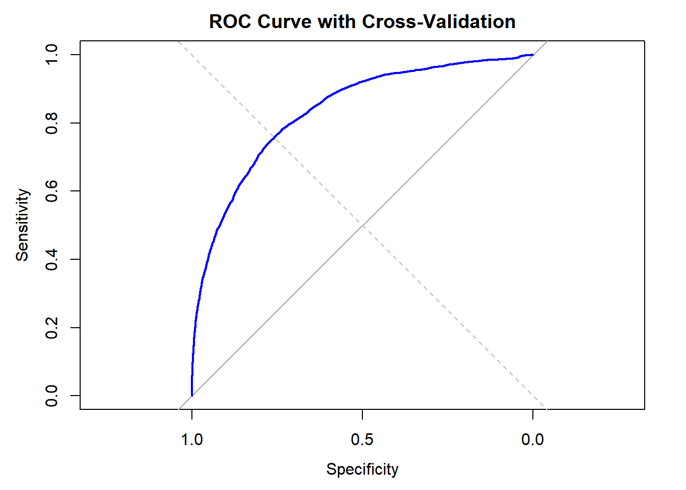

Model Building
3. How do fatalities and loss differ across seasons
To investigate whether there are significant differences in fatalities and injuries across seasons (Winter, Spring, Summer, Fall), a non-parametric method was used here to compare the medians of loss and fatalities across different seasons
Hypotheses Kruskal-Wallis Test
To evaluate the seasonal differences in tornado impacts,
Kruskal-Wallis tests were conducted for both loss and fatalities across
seasons. The null hypothesis for each test is that the median values of
loss and fatalities are the same across all seasons, while the
alternative hypothesis states that at least one season has a
significantly different median. Using the cleaned dataset, which
includes the categorical variable season and the continuous
variables loss and fat (fatalities), the test
statistics and p-values were calculated to assess the significance of
these differences at a 0.05 significance level. This approach allows for
a robust comparison of median values across seasons, even with
non-normally distributed data.
tornado_data <- read.csv("./data/1950-2023_actual_tornadoes.csv", na.strings = c("NA", "N/A", " "))
cleaned <- tornado_data |>
filter(yr >= 2000) |>
select(-tz, -stf, -ns, -sn, -sg, -f1, -f2, -f3, -f4) |>
relocate(fc, .after = mag)|>
drop_na()
# Optional
write.csv(cleaned, "cleaned_df.csv", row.names = FALSE)cleaned=cleaned |>
mutate(
# Create season as a factor based on the month
season = factor(case_when(
mo %in% c(12, 1, 2) ~ "Winter",
mo %in% c(3, 4, 5) ~ "Spring",
mo %in% c(6, 7, 8) ~ "Summer",
mo %in% c(9, 10, 11) ~ "Fall"
), levels = c("Winter", "Spring", "Summer", "Fall")),
# Convert mag to a factor
mag = as.factor(mag)
)
# Kruskal-Wallis test for loss across seasons
kruskal_loss=kruskal.test(loss ~ season, data = cleaned)
print(kruskal_loss)##
## Kruskal-Wallis rank sum test
##
## data: loss by season
## Kruskal-Wallis chi-squared = 1162.5, df = 3, p-value < 2.2e-16# test for fatalities across seasons
kruskal_fatalities=kruskal.test(fat~ season, data = cleaned)
print(kruskal_fatalities)##
## Kruskal-Wallis rank sum test
##
## data: fat by season
## Kruskal-Wallis chi-squared = 146.92, df = 3, p-value < 2.2e-16The test result shows significant seasonal variations in both economic losses and fatalities. For economic losses, the p-value was less than 0.05, indicating strong evidence to reject the null hypothesis that losses are evenly distributed across all seasons. Similarly, the p-value for fatalities was less than 0.05, also providing strong evidence to reject the null hypothesis and conclude that fatalities vary significantly across seasons.
To further identify specific seasonal differences, post-hoc test were then utilized. The Dunn’s test with Bonferroni adjustment was then conducted
Post-hoc Test Results for Loss Across Seasons
# Post-hoc test for loss across seasons
dunn_loss=dunnTest(loss ~ season, data = cleaned, method = "bonferroni")
print(dunn_loss)## Dunn (1964) Kruskal-Wallis multiple comparison## p-values adjusted with the Bonferroni method.## Comparison Z P.unadj P.adj
## 1 Fall - Spring 6.664038 2.664053e-11 1.598432e-10
## 2 Fall - Summer 20.528670 1.193991e-93 7.163947e-93
## 3 Spring - Summer 19.318850 3.728658e-83 2.237195e-82
## 4 Fall - Winter -12.277059 1.202927e-34 7.217560e-34
## 5 Spring - Winter -20.128608 4.144714e-90 2.486828e-89
## 6 Summer - Winter -31.691891 2.009520e-220 1.205712e-219In the post-hoc Dunn’s test for median based losses, all pairwise comparisons between seasons show significant differences as the p values for them are much smaller than 0.05. And it is exhibited that winter shows significantly higher. Fall has higher losses compared to spring and summer, and winter generally experiences the highest median of losses compared to all other seasons. Given the significant seasonal trends in losses, it is crucial to focus more on Fall and Winter tornadoes when addressing economic impacts even if the tornadoes are not most frequently occurring in these seasons
Post-hoc Test Results for Fatalities Across Seasons
# Post-hoc test for injuries across seasons
dunn_fatalities=dunnTest(fat~ season, data = cleaned, method = "bonferroni")
print(dunn_fatalities)## Dunn (1964) Kruskal-Wallis multiple comparison## p-values adjusted with the Bonferroni method.## Comparison Z P.unadj P.adj
## 1 Fall - Spring -0.5929891 5.531884e-01 1.000000e+00
## 2 Fall - Summer 5.3279154 9.934636e-08 5.960781e-07
## 3 Spring - Summer 7.9963062 1.282073e-15 7.692437e-15
## 4 Fall - Winter -6.0488587 1.458755e-09 8.752529e-09
## 5 Spring - Winter -6.5895148 4.412662e-11 2.647597e-10
## 6 Summer - Winter -11.4469857 2.434651e-30 1.460791e-29Regarding the comparisons of median based fatalities between different seasons, the adjusted p value shows the statistically significant differences for all except the fall and spring, indicating the approximately similar median fatalities between these two seasons. Based on the observations of other comparisons,winter season shows relatively higher fatalities compare to other seasons, followed by summer. Therefore, more preventive measures should be taken during Summer and Winter to address the heightened risks of fatalities.
4. How does the magnitude of events predict the distribution of fatalities?
To examine whether there is an association between the variables
mag (magnitude) and fat (fatalities) in the
dataset, a Chi-Square test of independence was performed. The Null
Hypothesis (H0) states that the magnitude of the tornadoes and
fatalities are independent. And the Alternative Hypothesis (H1) states
that there is an association between the magnitude of tornado events and
numbers of fatalities.
table_data=table(cleaned$mag, cleaned$fat)
# Perform Chi-Square Test
chisq.test(table_data)##
## Pearson's Chi-squared test
##
## data: table_data
## X-squared = 25983, df = 162, p-value < 2.2e-16The result shows that the p-value is far below the standard significance level (e.g., 0.05), so we reject the null hypothesis, indicating that there is a statistically significant association between the magnitude of the event and the number of fatalities. This result statistically confirms the observations initially identified during the exploratory data analysis (EDA), where trends suggested that higher magnitudes are likely to result in more fatalities.
5. Model comparison on predicting fatalities based on event characteristics.
The linear regression model was then developed to analyze the
relationship between fatalities (fat) as the dependent variable and
multiple predictors: magnitude (mag), injuries (inj), loss (loss),
length (len), and width (wid). And diagnostics were conducted to
evaluate the assumptions of linear regression, including linearity,
normality, homogeneity of variance, and outliers. The
check_model() function was used to evaluate four
assumptions of linear regression model: Linearity, Normality (QQ Plot),
Homogeneity of Variance (Homoscedasticity) and Influential
Observations
# Prepare the model specification
lm_spec =linear_reg()|>
set_mode("regression")|>
set_engine("lm")
final_model=lm(fat ~ mag + inj + loss + len + wid, data = cleaned)
check_model(final_model, check = c("linearity", "qq", "homogeneity", "outliers"))
Diagnostic Report for Linear Regression Model
- Linearity: The residuals display a curved pattern, and the residuals do not scatter randomly around the horizontal line at zero, indicating that the assumption of linearity is violated.
- Homoscedasticity: the variance of errors is not constant across all levels of fitted values, so it is also violated
- Influential Observations: Several points, particularly those with leverage values exceeding 0.2, are flagged as potentially influential, which requires the further investigation.
- Normality check: The QQ plot demonstrates significant deviations from normality at both ends.
Polynomial Regression
With the diagnostic observations from the linear regression model, a more flexible modeling approach was implemented using polynomial terms and interaction effects to better capture the nonlinear relationships and reduce the influence of heteroscedasticity and non linearity.
Model 1 was selected with the following predictors as some of them were tested and observed in the previous analysis:
- Formula:
fat ~ poly(mag, 2) + poly(inj, 2) + poly(loss, 2) + poly(len, 2) + poly(wid, 2), second-order polynomial terms for all predictors (mag, inj, loss, len, and wid) without interaction terms.
# Fit the regression model
model=lm(fat ~ poly(mag, 2) + poly(inj, 2) + poly(loss, 2) + poly(len, 2) + poly(wid, 2), data = cleaned)
# Tidy the model results and print in a neat table
broom::tidy(model) |>
knitr::kable(digits = 3, caption = "Regression Model Results with Polynomial Terms")| term | estimate | std.error | statistic | p.value |
|---|---|---|---|---|
| (Intercept) | 0.060 | 0.004 | 13.334 | 0.000 |
| poly(mag, 2)1 | 8.860 | 1.052 | 8.422 | 0.000 |
| poly(mag, 2)2 | 15.400 | 0.855 | 18.015 | 0.000 |
| poly(inj, 2)1 | 161.696 | 0.858 | 188.433 | 0.000 |
| poly(inj, 2)2 | -2.946 | 0.858 | -3.435 | 0.001 |
| poly(loss, 2)1 | -11.555 | 0.780 | -14.815 | 0.000 |
| poly(loss, 2)2 | 3.483 | 0.775 | 4.495 | 0.000 |
| poly(len, 2)1 | 8.696 | 1.028 | 8.462 | 0.000 |
| poly(len, 2)2 | 27.108 | 0.857 | 31.628 | 0.000 |
| poly(wid, 2)1 | 1.812 | 1.029 | 1.760 | 0.078 |
| poly(wid, 2)2 | -1.252 | 0.827 | -1.515 | 0.130 |
The comparison model was used to test if simplifying the model by using fewer polynomial terms and focusing on interactions can improve generalization and further improve the performance of the prediction. So Model 2:
- Formula:
fat ~ poly(mag, 2) + inj:loss + poly(len, 2) + poly(wid, 2), second-order polynomial terms for mag, len, and wid, as well as an interaction term betweeninjandloss.
Cross Validation
The dataset was split into training and testing sets for cross-validation, with each model trained on the training set and evaluated on the corresponding test set. Prediction accuracy was assessed using the Root Mean Squared Error (RMSE). And the violin plot is used to visualize the rmse of using cross-validation
cv_df <- crossv_mc(cleaned, 100) |>
mutate(
# Convert train and test sets to tibbles
train = map(train, as_tibble),
test = map(test, as_tibble)
)# Fit models and calculate metrics
cv_results=cv_df |>
mutate(
# Fit models with polynomial terms
model1_mod = map(train, \(df) lm(fat ~ poly(mag, 2) + poly(inj, 2) + poly(loss, 2) + poly(len, 2) + poly(wid, 2), data = df)),
model2_mod = map(train, \(df) lm(fat ~ poly(mag, 2) + inj:loss + poly(len, 2) + poly(wid, 2), data = df)),
) |>
mutate(
# Calculate RMSE for each model on the test sets
rmse_model1 = map2_dbl(model1_mod, test, \(mod, df) rmse(model = mod, data = df)),
rmse_model2 = map2_dbl(model2_mod, test, \(mod, df) rmse(model = mod, data = df))
)
# Combine metrics for all models
summary_results=cv_results |>
summarise(
mean_rmse_model1 = mean(rmse_model1),
mean_rmse_model2 = mean(rmse_model2)
)
print(summary_results)## # A tibble: 1 × 2
## mean_rmse_model1 mean_rmse_model2
## <dbl> <dbl>
## 1 0.727 1.16cv_long=cv_results |> select(starts_with("rmse"))|>
pivot_longer(
everything(),
names_to = "model",
values_to = "rmse",
names_prefix = "rmse_") |>
mutate(model = fct_inorder(model))
cv_long|>ggplot(aes(x = model, y = rmse)) +
geom_violin()+
labs(
title = "Cross-Validated RMSE for fatality",
x = "Model",
y = "RMSE"
) +
theme_minimal()
It is observed that the better performance of the first model
model1_mod using cross-validation is slightly better
compared to the second model model2_mod, with the RMSE
increase from about 0.71 to 1.12.